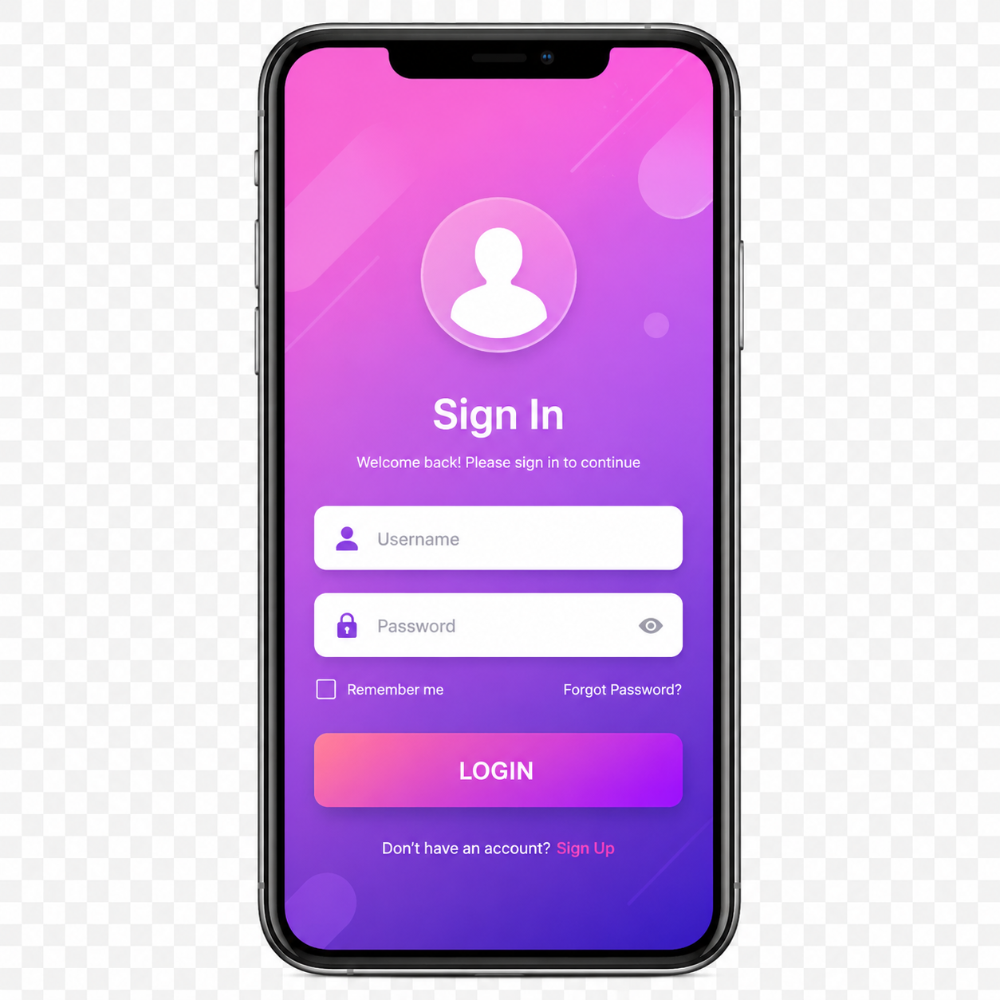
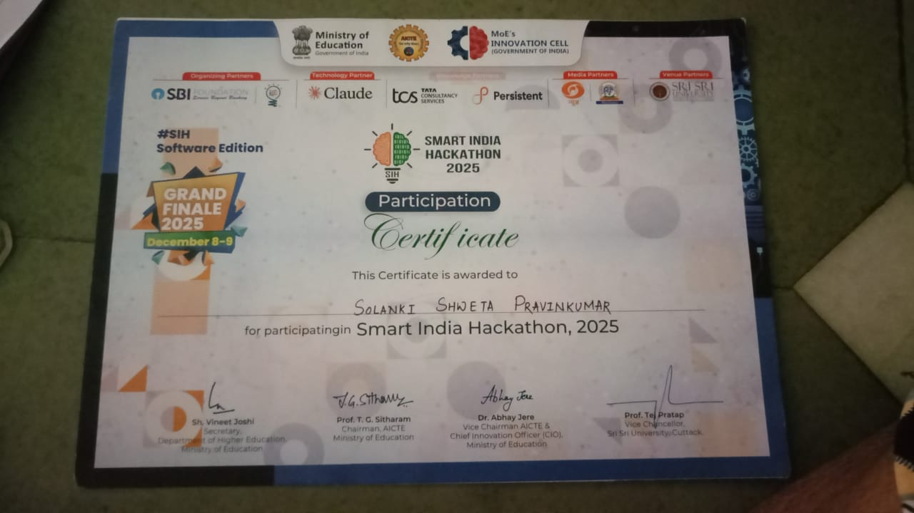
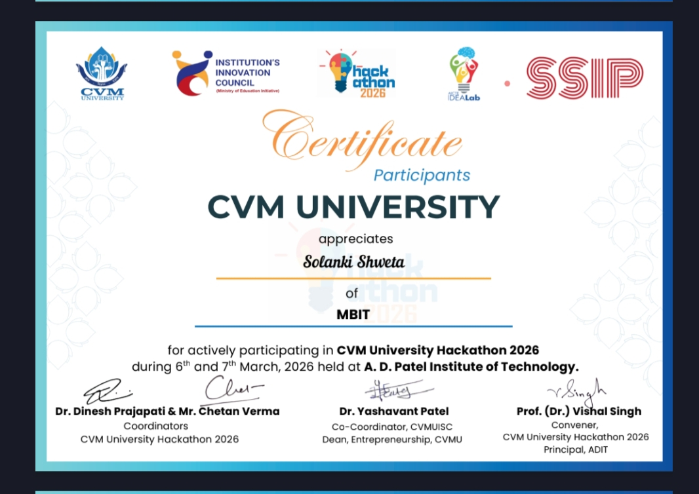

Skills

HTML
CSS
JavaScript

Figma

Mobile UI

Web Design

MongoDB

SQL
UI/UX Designer
Creative • Modern • User Friendly Design
I am Solanki Shweta, a 3rd year Computer Engineering student with a strong passion for UI/UX Design, including mobile app and web interface design. I enjoy creating clean, modern, and user-friendly digital experiences using tools like Figma. I have worked on designing mobile app layouts and website interfaces with a focus on creativity and user experience. I actively participate in hackathons, including CVMU 2026, where I improved my problem-solving, creativity, and teamwork skills. I am always eager to learn new design trends and technologies, and I aim to build innovative and impactful solutions in the field of UI/UX design.
Madhuben and Bhanubhai Patel Institute of Technology, New V.V. Nagar
10th Percentage : 91.50%
12th Percentage : 59.00%
Last Semester SGPA : 8.83
Current CGPA : 8.04
HTML
CSS
JavaScript
Figma

Mobile UI
Web Design
MongoDB
SQL
AgriDirect is a blockchain-based agriculture supply chain platform designed to create transparency, trust, and efficiency between farmers, buyers, and consumers. The platform allows users to track the complete journey of crops from farms to markets using QR code technology. Consumers can scan QR codes to view product details such as farmer information, crop quality, cultivation methods, transportation history, and pricing transparency. AgriDirect also includes AI-based crop price prediction to help farmers understand market trends and sell products at fair prices. The platform provides secure online transactions, direct farmer-to-buyer communication, and digital payment support to reduce the involvement of middlemen. Additional features include farmer support services, real-time product tracking, order management, and a user-friendly dashboard for both farmers and customers. The main goal of AgriDirect is to improve trust in agricultural products, increase farmers' profits, and build a smarter and more transparent agriculture ecosystem using modern technologies like Blockchain, AI, and Web Development.
SoulSync is a modern and interactive web application designed to connect users through personalized communication, smart recommendations, and engaging digital experiences. The platform focuses on creating meaningful user interactions with a clean, attractive, and user-friendly interface. SoulSync provides personalized content suggestions based on user interests and behavior, helping users discover relevant connections and experiences more effectively. The application is designed using modern UI/UX principles to ensure smooth navigation, responsive layouts, and an enjoyable user experience across all devices. Features include user profile management, real-time interaction, personalized dashboards, secure login systems, and dynamic content display. SoulSync also emphasizes responsive web design, accessibility, and performance optimization to deliver fast and seamless interaction for users. The project highlights creativity, front-end development skills, and modern web design techniques using technologies such as HTML, CSS, JavaScript, and UI/UX design tools like Figma. The main objective of SoulSync is to provide a smart, modern, and engaging platform that improves user communication, interaction, and overall digital experience.

Participated in Smart India Hackathon 2025 and worked on innovative problem-solving ideas.

Successfully participated in CVMU Hackathon 2026 and enhanced teamwork and creativity skills.
Email : solankipravinbhai06@gmail.com
Phone : 9664599379
LinkedIn : View Profile